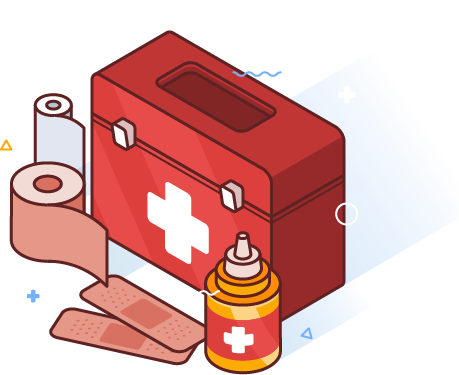

<article>
    <p>¿Que hacer en caso de sismo?</p>
    <p>Durante:
        <li>Listado de teléfonos de emergencia</li>
        <li>Gasas estériles</li>
        <li>Suero fisiológico o solución salina</li>
        <li>Vendajes de tela</li>
        <li>Esparadrapo</li>
        <li>Guantes desechables</li>
        <li>Tijeras punta redonda</li>
        <li>Curas</li>
        <li>Termómetro</li>
        <li>Linterna</li>
        <li>Tapabocas</li>
    </p>
    <div style="padding-left: 150px">
        
    </div>
</article>
